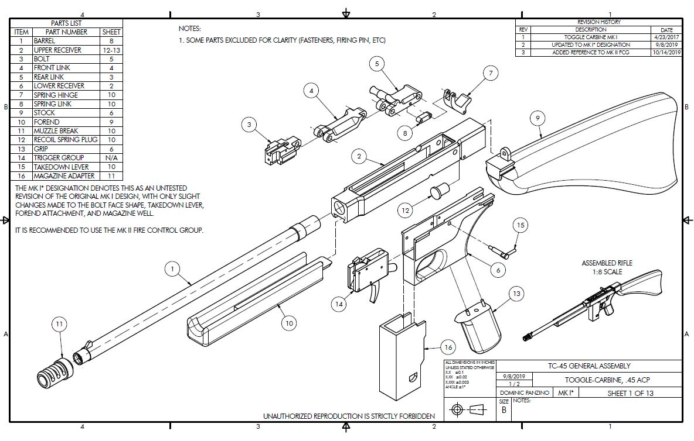

Drawings and Plans
Summer 2018
Purchase my plans and designs

I have begun the process of revising all my drawings and plans to make them of suitable quality for sale, so if you find any of my projects interesting or would like to try building your own version of any of my guns or other designs, you can now purchase my plans. I'm slowly going through all my designs, so many of them do not have plans available yet, so if there's something you want but I don't have plans yet, please contact me and let me know you're interested and I will make it my priority to get those particular plans done for you as fast as I can.
All my plans are distributed as paper copies, printed on ANSI size B paper (11"x17"). If you are purchasing plans for a gun, which are considered technical data for defense articles, then you MUST be a US citizen and MUST provide a US shipping address. My non-firearm designs can be freely distributed to anyone.
Drawings are currently availible for the following itmes:
-TC45 MkI*: Featuring all modifications I made to my original prototype, along with the revised Mk II Fire Control Group
-C32 MkII: My .32 ACP broomhandle design, redesigned for simple blowback with a much simpler fire-control-group.
More to come!